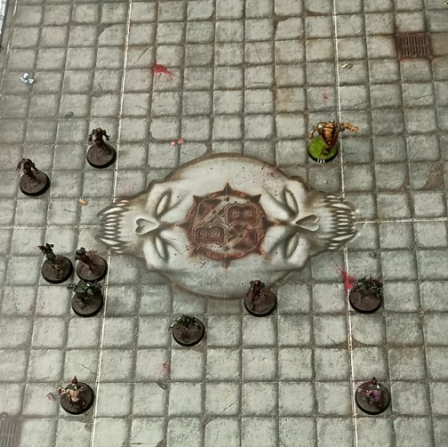
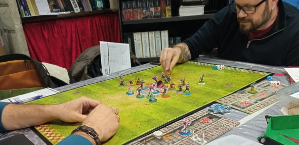
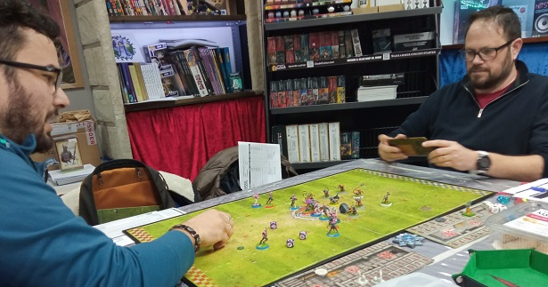
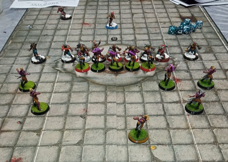
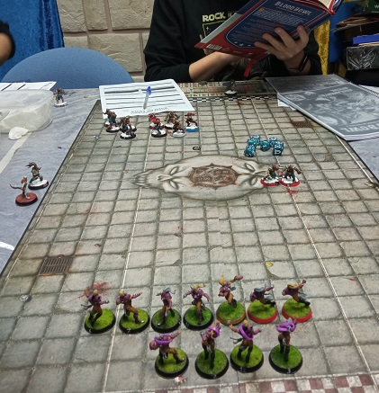

PDFs actas de partido
Sergio VS Raul Frank VS Rodrigo M Enric VS Santi Miguel VS Rodrigo H

22/01/25
-Otra gran jornada de BloodBowl. ¿No estas de acuerdo, Bob?
-Pfff!!
-Te noto un poco abatido, Bob. Y más teniendo en cuenta la cantidad de heridos y muertos en el partido de Frank vs Rodri H.

-Bah! Ya sabes que yo valoro sobretodo el deporte, Jim
-!Ja, ja ,ja!.... er... ah! que lo dices en serio...
-¡Pues claro!
-¿No me digas que el ogro muerto en el partido era algún pariente tuyo, Bob?
-Solo un conocido, entrenamos juntos en los Kjartan Ogres cuando el empezaba y yo ya pensaba en retirarme.
-Vaya, lo siento mucho, Bob.
-¿Y el otro ogro que ha terminado el partido roncando en el banquillo? Una verguenza para la raza ogra.
-Bueno, Bob. Esos zombies andantes pisan duro.
-¡Cambia de tema, Jim!
-Eh... claro, Bob. Faltaría más. ¿Que te ha parecido el partido disputado ayer entre Norses y Elfos?
-Este no ha sido un mal partido. ¡Pero aún habría sido mejor si hubiera habido algún elfo más lesionado o muerto!
-¿Ahora que no hay ogros muertos vuelves a tener sed de sangre, eh, Bob?.
-¡Ya estoy harto, Jim!
...
--ruido de cacharros rotos--
...
-Debido a dificultades técnicas abandonamos la conexión en este momento. ¡Quedamos pendientes del partido de esta tarde!... ¡Calma, Bob...
09/01/25


-Espectacular tarde de Blood Bowl. Dime Bob. ¿Has visto algún partido más ajustado ultimamente?
-¿Ajustado? No lo creo, Jim.
-Los skaven de Enric supieron escurrirse entre las defensas elfas y marcar un pírrico tanto.
-Esas pequeñas sabandijas...
-Y los fans más violentos tampoco han quedado defraudados.
-Cierto, Jim. No es que haya sido el partido más duro de la historia pero esa rata corredora muerta hizo la delicia de mi club de fans.
-¿Te refieres a tus cuatro amigotes ogros?
-Efectivamente, Jim. La AMABA.
-¿AMABA?
-Asociacion por un juego Mas Agresivo, Brutal y Arrebatado
-En fin... Recordemos que también se han jugado un par de medias partes.


-Partidos brutales también.
-Eso es. Los IcedBlood de Soria ya se adelantan 2 - 0 en el descanso.
-Y el partido de Enanos contra Nobleza va 1 - 1. Espero que esos retacos saquen lo mejor de si y se lien a tortas con esos remilgados humanos.